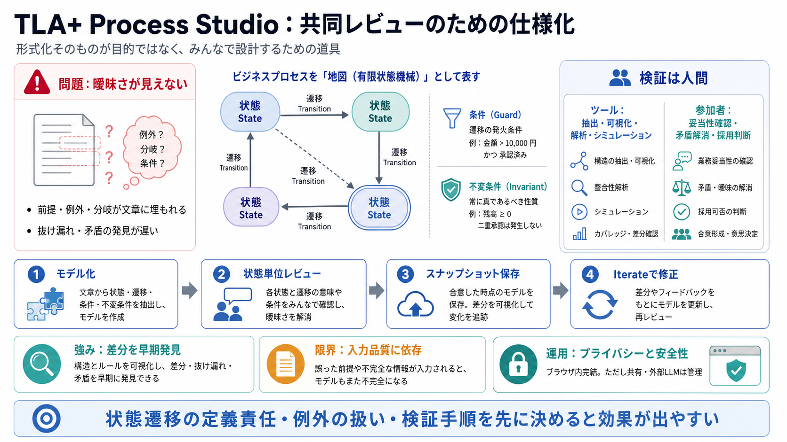

Temporal logic of actions - Wikipedia
Temporal logic of actions (TLA) is a logic developed by Leslie Lamport, which combines temporal logic with a logic of ac…

業務プロセスを有限状態機械としてモデル化し、状態と遷移の見える化・シミュレーション・反復改善を支える Web ツールです。
「形式化を目的」にせず「共同設計の道具」にする。
文章ベースの業務説明は、前提・例外・分岐・矛盾が可視化されず、レビューで「感覚」になりがちです。
状態の出発遷移がない／前提が未記載／条件が矛盾する経路がある、などが見落とされる。
モデルが整って見えても現実とズレる可能性が残り、手戻りが遅くなる。
プロセスを「状態（State）」と「遷移（Transition）」に分解すると、“次に何が起きうるか”が図として追えます。
状況のスナップショット。
状態から別状態へ移るルール。
ラベル付き遷移を時間付きで厳密に扱う。
ツールは TLA+ のサブセット入力から、状態・遷移・不変条件などを抽出して可視化し、シミュレーションします。
状態／ラベル付き遷移／不変条件（invariant）など。
「現在から次に何が起きうるか」「曖昧／欠落」を見える化する。
レビューは状態単位でコメントとして付与され、スナップショットとして保存されます。
プロセス記述を有限状態機械に分解。
どの状態・遷移に問題があるかをコメントで特定。
バージョン（時点）を残して追跡可能に。
コメントを統合して“修正版仕様”を生成。
指摘が「どの状態・どの遷移か」に紐づくため、参加者の暗黙知が仕様の差分として可視化されます。
意見の衝突ではなく、仕様の差分解消へ寄せられる。
モデルと実態の不一致が“どこで起きているか”に落ちる。
ツールは解析・可視化・シミュレーションを行いますが、現実との一致（validation）は参加者が担う前提です。
生成・変換の支援（“それらしい修正”を出しうる）。
矛盾の解消・前提の妥当性の確認（採用前にレビュー）。
モデルやコメントはサーバへ送らない設計が明示されており、機密性を一定程度保ちやすいとされています。
共有は URL フラグメント（#以下）にエンコード。
共有方法やログ、外部 LLM 利用で露出の可能性はゼロではない。
形式手法の強さは整合性を支えること、弱さは“入力の質”と“現実検証”に依存することです。
状態遷移として整理→解析・可視化→シミュレーションで早期に差を見つけやすい。
状態・遷移・前提が不適切だと、正確に見えても現実とズレる。
実務で価値を出すには、どこにコメントを残すかと、誰がどう検証するかを先に決めるのが重要です。
状態ごとに出発遷移・前提を明示して、欠落を表面化する。
コメント→スナップショット→Iterate→修正版仕様、を回して改善する。
サーバ送信は抑えられても、LLM 連携や共有手段で管理が必要。
誤りの検出基準（誰が・何を根拠に正とするか）を明文化する。
Agent 機能は UI を駆動して効率化につながりうる一方、誤操作や状態不整合のリスク管理は追加検討が必要です。
ブラウザセレクタで UI 操作を行う設計。
提示文にはガードや安全策の具体がないため、運用設計が要る。
分岐や失敗モードがあり、状態として整理しやすい業務フローは相性が良いです。
雇用・保険請求・インシデント対応・調達など（フロー＋分岐あり）。
超複雑で暗黙ルール主体だと、最初のモデル化負荷が上がる。
TLA+ Process Studio は、形式化をゴールでなく共同レビューの道具にする点に価値があります。
導入前に「状態遷移の定義責任」「例外の扱い」「検証手順」を明文化すれば、効果が出やすい。
以下はユーザー提示文の中に含まれる主題（用語・機能・論点）を、読み替えのために再整理したものです。
有限状態機械（Finite State Machine）／状態（State）／遷移（Transition）／TLA+（Temporal Logic of Actions）／
不変条件（invariant）／サブセット入力
（状態遷移として整理）
可視化・解析・シミュレーション／状態単位コメント／スナップショット／Iterate／Prompts
（修正版仕様生成）
サーバ送信しない（WebAssembly）／共有 URL は URL フラグメント（#以下）エンコード
（ただし外部 LLM では管理が必要）
入力品質に依存する／検証は参加者責任／Agent は安全性ガード要検討
（採用前レビュー）
※実在の公式ドキュメントURLは、今回の提示文中に明示されていないため、記載していません。
Temporal logic of actions (TLA) is a logic developed by Leslie Lamport, which combines temporal logic with a logic of ac…
home > research > tla-plus-system-design · Jan 10, 2026. # TLA+ for System Design: A CTO/L7 Engineer's Guide. Why TLA+ M…
TLA + is a language intended for the high-level specification of reactive, distributed, and in particular asynchronous s…
TLA+ is a powerful formal specification language that enables engineers to specify, model, and verify concurrent and dis…
### Lecture 2. ### The Next Video.